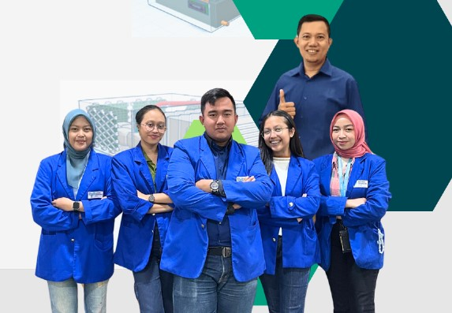

Sistem Filterasi dan Bioteknologi untuk Menciptakan Udara yang Bersih dan Sehat (SimFilTek)
Halo perkenalkan kami adalah tim SimFilTek Institut Teknologi PLN. Kami dengan bangga mempersembahkan prototype inovatif kami yang dirancang khusus untuk menyaring udara yang tidak sehat dan mengubahnya menjadi udara yang sehat dan bersih. Prototype ini memiliki kemampuan luar biasa dalam menghilangkan partikel berbahaya, polutan, dan alergen dari udara, sehingga sangat bermanfaat bagi kesehatan manusia. Dengan menggunakan teknologi sederhana, Prototype ini tidak hanya membantu mencegah berbagai masalah kesehatan yang disebabkan oleh kualitas udara yang buruk, tetapi juga menciptakan lingkungan yang lebih nyaman dan aman bagi kita semua. Kami yakin bahwa Prototype ini akan menjadi solusi efektif untuk meningkatkan kualitas udara di sekitar kita dan berkontribusi positif bagi kesehatan masyarakat secara keseluruhan.